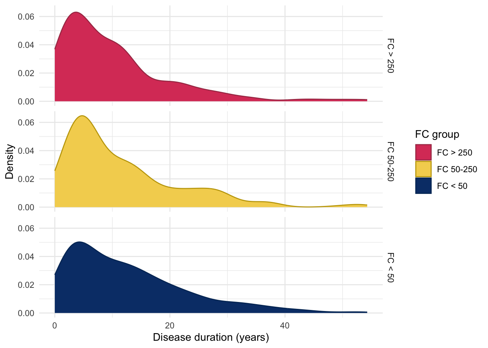

This page explores data which describes subjects’ IBD, primarily consisting of clinical data.
IBD type
For this study, we have grouped ulcerative colitis (UC) and inflammatory bowel disease unclassified (IBDU) into one category. IBD type is self-reported.
Whilst PREdiCCt was designed to recruit an equal number of CD and UC/IBDU subjects, the COVID-19 pandemic halted recruitment which has resulted in there not being an equal balance of CD and UC/IBDU subjects.There are slightly more Crohn’s disease (CD) than UC/IBDU subjects in the FC cohort.
Table 1: Chi-squared test between IBD type and FC groups.
Pearson’s Chi-squared test: demo$diagnosis2 and demo$cat
Test statistic
df
P value
6.815
2
0.03313 *
From Figure 2, we can see subjects with UC/IBDU are more likely to have FC < 50, whiilst CD subjects are more likely to have FC 50-250. Roughtly the same proportion of subjects with CD and UC/IBDU have FC > 250.
Figure 2: Distribution of FC category by IBD subtype.
Disease duration
Disease duration has been calculated by subtracting reported date of diagnosis from the date of entry into PREdiCCt. Date of diagnosis has been obtained via REDcap. Where only year was available, the datefixR R package was used to impute the middle of the year. Any disease durations reported to be negative using this method were mapped to 0.
Code
redcap<-read_xlsx(paste0(redcap.path, "redcap_clean.xlsx"))redcap<-distinct(redcap, participantno, .keep_all =TRUE)diag.date<-redcap[, c("participantno", "date_diag")]colnames(diag.date)[1]<-"ParticipantNo"diag.date<-subset(diag.date, (!is.na(date_diag))&(!is.null(date_diag))&date_diag!="")duration<-merge(diag.date,demo, by ="ParticipantNo", all.x =FALSE, all.y =TRUE)duration<-distinct(duration, ParticipantNo, .keep_all =TRUE)duration<-subset(duration, tolower(date_diag)!="unknown")duration[duration[, "date_diag"]=="16/032016", "date_diag"]<-"16/03/2016"duration[duration[, "date_diag"]=="19/04/2017P", "date_diag"]<-"19/04/2017"duration[duration[, "date_diag"]=="2007 APPROX", "date_diag"]<-"2007"duration[duration[, "date_diag"]=="approx 1988", "date_diag"]<-"1988"duration[duration[, "date_diag"]=="?2014", "date_diag"]<-"2014"duration<-fix_date_df(duration, c("entry_date", "date_diag"))duration$duration<-as.numeric(with(duration,(entry_date-date_diag)/365.25))duration[duration[, "duration"]<0, "duration"]<-0duration.cd<-subset(duration, diagnosis=="1")duration.uc<-subset(duration, diagnosis!="1")p<-duration%>%ggplot(aes(x =duration, color =diagnosis2, fill =diagnosis2))+geom_histogram(bins =25)+theme_minimal()+labs( x ="Duration (years)", y ="Frequency", color ="IBD type", fill ="IBD type")+scale_fill_manual( values =c("#CDEDF6", "#FF6B6B"))+scale_color_manual( values =c("#5EB1BF", "#C24343"))ggsave("plots/Duration-full-cohort.png",p, width =9, height =6)ggsave("plots/Duration-full-cohort.pdf", p, width =9, height =6)duration%>%drop_na(duration)%>%ggplot(aes(x =duration, color =diagnosis2, fill =diagnosis2))+geom_histogram(bins =25)+theme_minimal()+labs( x ="Duration (years)", y ="Frequency", color ="IBD type", fill ="IBD type")+scale_fill_manual( values =c("#CDEDF6", "#FF6B6B"))+scale_color_manual( values =c("#5EB1BF", "#C24343"))
Figure 3
Whilst a low p-value was observed, disease duration was not significantly different between FC groups.
Warning: Removed 56 rows containing non-finite outside the scale range
(`stat_density()`).

Figure 4: Distribution of disease duration by FC in UC.
IBD Control
Code
IBD<-read_xlsx(paste0(data.path, "Baseline2022/IBD.xlsx"))# create flare_group in IBD_C and make into levelIBD<-IBD%>%mutate(flare_group =ifelse(FlaresInPastYear==0,"No Flares","1 or More Flares"))IBD$flare_group<-factor(IBD$flare_group, levels =c("No Flares", "1 or More Flares"))IBD<-IBD%>%mutate(treatment =ifelse(TreatmentUseful==4,"Not On Treatment","On Treatment"))IBD$treatment<-factor(IBD$treatment, levels =c("Not On Treatment", "On Treatment"))# correcting scores where No is favourable and Yes is unfavourable outcomes# answer options were always YES/NO/Not sureif(any(IBD$MissPlannedActivities==3)){IBD<-IBD%>%mutate_at(vars("MissPlannedActivities":"NewSymptoms"),~recode(., `3` =1, `2` =2, `1` =0))}# correct TreatmentUseful (Yes is favourable, No unfavourable)# not on treatment was assigned the value 1if(any(IBD$TreatmentUseful==3)){IBD<-IBD%>%mutate_at("TreatmentUseful",~recode(., `4` =2, `3` =1, `2` =0, `1` =2))}# exclude rows with missing data, 17 participants excluded for missing IBD-control questionnaire dataIBD<-IBD%>%filter(!rowSums(is.na(select(., 17:27)))>0)# new column with total control scoreIBD<-IBD%>%mutate(control_score =rowSums(select(., 17:27), na.rm =TRUE))# new column with IBD-control-8 score# added 2 to make comparable to future scores where the first question is asked to make comparable to future and against the cut off of 13 which indicates remissionIBD<-IBD%>%mutate(control_8 =TreatmentUseful+MissPlannedActivities+WakeUpAtNight+SignificantPain+OftenLackEnergy+AnxiousDepressed+NeedChangeTreatment+2)# create groups with cut off of IBD-control-8 scores quiescent (13 or above)/not quiescentIBD<-IBD%>%mutate(control_grouped =ifelse(control_8>=13, "13-16", "0-12"))IBD$control_8<-as.factor(IBD$control_8)IBD<-IBD%>%mutate(vas_control =ifelse(OverallControl>=85, "85+", "<85"))demo<-merge(demo, IBD[, c("ParticipantNo", "control_8", "OverallControl", "vas_control")], by ="ParticipantNo", all.x =TRUE, all.y =FALSE)
IBD Control is a validated questionnaire designed to assess disease control from a patient’s perspective (Bodger et al. 2013). We considered an eight question subset, IBD-Control-8 which ranges in potential scores from 0 to 16. We also consider the IBD-Control visual analogue scale (VAS). Bodger et al. (2013) found a cut-off of \geq 13 for IBD-Control-8 and a cut-off of \geq 85 for IBD-Control-VAS to be optimal for identifying quiescent disease.
Figure 5: Distributiuon of IBD Control scores for (A) Control-8 and (B) Visual analogue scale. The vertical red lines denote the cut-offs for quiescent disease reported by Bodger et al. (2013).
IBD-Control-8 scores and VAS were both found to be significantly associated with FC.
Table 10: ANOVA between control VAS and FC groups in UC/IBDU.
Analysis of Variance Model
Df
Sum Sq
Mean Sq
F value
Pr(>F)
cat
2
2933
1467
6.448
0.001665
Residuals
822
186983
227.5
NA
NA
Instead to treating VAS as a continuous value, going forward, VAS will be discretised into below 85 and 85 and above as a VAS of 85 was found by Bodger et al. (2013) to be predictive of quiescent disease.
For IBD treatment, subjects are categorised as being on either a 5-ASA, mono immunotherapy, mono biologic, or immuno-biologic combination treatment strategy based upon REDCap data provided by participants’ IBD care teams.
Treatments. in REDCap were selected via check boxes. As such, NA (unticked) is assumed to mean the participant is not on a given medication.
Immunosuppressants are defined as:
Azathioprine
Mercaptopurine
Methotrexate
Ciclosporin
Biologics are defined as:
Infliximab
Adalimumab
Golimumab
Vedolizumab
Ustekinumab
Patients are only categorised as receiving a 5-ASA treatment plan if 5-ASA is the only IBD treatment they are receiving (I.E no immunotherapy or biologics).
As should be expected given poor efficacy in CD, a 5-ASA treatment strategy is much more common for UC/IBDU participants (Figure 7). Mono biologic therapy is the most common treatment strategy for CD subjects.
Figure 7: Reported treatment strategies for the FC cohort.
As we are unable to differentiate between participants which are are no treatment and those for whom treatment data is missing, we will instead use a None reported category.
Bio-naive status has been determined using REDCap and EoS data. As clinical teams were not explicitly asked if a subject was bio-naive, the subject is instead defined as being bio-naive if there are no recorded biologics for the subject (which may bias subjects with missing data towards incorrectly being reported as bio-naive). Non bio-naive subjects are categorised further into either “currently using” or “previously used”.
Biologic treatments are defined as infliximab, adalimumab, golimumab, vedolizumab, and ustekinumab.
Small molecule treatments are not considered in this report due to their low prescribing rates during the recruitment period (which ended March 2020).
Bio-naive status was found to be associated with FC groups which may be due to patients with more active disease being more likely to be prescribed a biologic.
Table 15: Chi-squared test between between smoking status and FC groups.
Pearson’s Chi-squared test: demo$Smoke and demo$cat
Test statistic
df
P value
8.662
4
0.07013
E-cigarette use
The vast majority of participants do not report using some form of e-cigarettes. It should be noted that as recruitment ended March 2020, these day may not reflect more modern trends.
Table 16: Chi-squared test between between E-cigarettte usage and FC groups.
Pearson’s Chi-squared test: demo.cd$ECigs and demo.cd$cat
Test statistic
df
P value
5.96
4
0.2022
Variables only relevant to Crohn’s disease subjects
This section looks at data only applicable to subjects with CD. The following variables are considered: surgery, Montreal location, Montreal behaviour, Harvey-Bradshaw index, and smoking.
Surgery
Code
predicct.surgery<-read_xlsx(paste0(data.path,"Baseline2022/IBD.xlsx"))[, c("ParticipantNo", "HadSurgeryForIBD")]colnames(predicct.surgery)[2]<-"Surgery"redcap.surgery<-redcap[, c("participantno", "surgery")]names(redcap.surgery)<-c("ParticipantNo", "Surgery")surgery<-rbind(redcap.surgery, predicct.surgery)surgery<-subset(surgery, !is.na(surgery$Surgery))# As REDCap is first, this will be prioritised over subject (if not NA)surgery<-distinct(surgery, ParticipantNo, .keep_all =TRUE)demo.cd<-subset(demo, diagnosis2=="CD")demo.cd<-merge(demo.cd, surgery, all.x =TRUE, all.y =FALSE)demo.cd$Surgery<-factor(demo.cd$Surgery, levels =c(2, 1), labels =c("No", "Yes"))
Surgical data has been obtained from both REDCap and patient-completed questionnaires. Where data are available from both data sources, REDCap is the preferred data source.
Montreal location has been obtained from REDcap data. Rather than being asked for Montreal location directly, clinical teams were asked to provide more granular detail by ticking boxes if inflammation was in any of the following areas Oesophago-gastric, Duodenal, Jejunal, Ileal, Colonic, Rectal. If only any of the first 3 were reported then the subject was assigned “L4 only”. L1-L3 were assigned as per convention (Silverberg et al. 2005). If no location was reported then location was assigned NA.
As can be seen in Figure 12, L3 is the most common Montreal location in this cohort with roughly an equal amount of subjects having either L1 or L2.
Montreal behaviour has been obtained from REDCap data and was recorded conventionally. The majority of CD subjects have the B1 (inflammatory) phenotype.
We consider smoking for CD and UC separately as smoking is often reported to worsen outcomes in CD but is possibly protective in UC. Smoking status is self-reported by study participants.
Whilst most subjects have never been a smoker, a substantial proportion of subjects (27%) have previously been smokers.
Table 24: Chi-squared test between between smoking status and FC groups for CD subjects.
Pearson’s Chi-squared test: demo.cd$Smoke and demo.cd$cat
Test statistic
df
P value
11.08
4
0.02572 *
E-cigarette use
The vast majority of participants do not report using some form of e-cigarettes. It should be noted that as recruitment ended March 2020, these day may not reflect more modern trends.
Table 25: Chi-squared test between between E-cigarettte usage and FC groups for CD subjects.
Pearson’s Chi-squared test: demo.cd$ECigs and demo.cd$cat
Test statistic
df
P value
5.96
4
0.2022
Variables only relevant to ulcerative colitis/IBDU subjects
This section looks at variables only relevant to UC/IBDU subjects: Montreal extent, Mayo score, Smoking status and E-cigarette use.
As PREdiCCt required subjects to be able to flare, this effectively excluded UC subjects who had undergone a proctocolectomy. As such, previous surgery is not considered. Montreal severity was not collected by PREdiCCt.
Montreal extent
Code
mapping<-data.frame( code =seq(1, 6), definition =c("Rectum","Recto-sigmoid","< Splenic","< Hepatic","Total","Unknown"), mont =c(1, 2, 2, 3, 3, NA))demo.uc<-subset(demo, diagnosis2=="UC/IBDU")redcap.uc<-subset(redcap, participantno%in%demo.uc$ParticipantNo)names(redcap.uc)[names(redcap.uc)=="participantno"]<-"ParticipantNo"redcap.uc<-redcap.uc[, c("ParticipantNo", "max_extent")]redcap.uc$Extent<-mapvalues(redcap.uc$max_extent, from =mapping$code, to =mapping$mont)demo.uc<-merge(demo.uc,redcap.uc[, c("ParticipantNo", "Extent")], by ="ParticipantNo", all.x =TRUE, all.y =FALSE)demo.uc$Extent<-factor(demo.uc$Extent, levels =seq(1, 3), labels =c("E1", "E2", "E3"))
Montreal extent has been obtained from REDCap. Similar to Montreal location, the extent of inflammation has been reported in more granular detail than is required for the Montreal classification. The below table shows how these definitions have been mapped to Montreal extent.
Table 26: Chi-squared test between Montreal extent and FC groups.
Pearson’s Chi-squared test: demo.uc$Extent and demo.uc$cat
Test statistic
df
P value
2.281
4
0.6842
Mayo score
Mayo score was collected via REDCap and is more complete than HBI.
Code
mayo.df<-redcap[, c("participantid", "current_mayo")]colnames(mayo.df)<-c("ParticipantId", "Mayo")mayo.df<-subset(mayo.df, ParticipantId%in%demo.uc$ParticipantId)demo.uc<-merge(demo.uc, mayo.df, by ="ParticipantId", all.x =TRUE)demo.uc%>%drop_na(cat)%>%ggplot(aes(x =as.factor(Mayo)))+geom_bar(fill ="#284B63", color ="#153243")+theme_minimal()+ylab("Frequency")+xlab("Mayo score at time of recruitment")
Figure 20
Mayo score is highly significantly associated with FC.
Figure 22: E-cigarette usage for UC subjects in the FC cohort.
E-cigarette use was found to significantly differ between FC groups in UC. However, the low number of subjects reported to use E-cigarettes (Figure 22) should be beared in mind when interpretting this finding.
Bodger, Keith, Clare Ormerod, Daniela Shackcloth, and Melanie Harrison. 2013. “Development and Validation of a Rapid, Generic Measure of Disease Control from the Patient’s Perspective: The IBD-Control Questionnaire.”Gut 63 (7): 1092–102. https://doi.org/10.1136/gutjnl-2013-305600.
Silverberg, Mark S., Jack Satsangi, Tariq Ahmad, Ian DR Arnott, Charles N. Bernstein, Steven R. Brant, Renzo Caprilli, et al. 2005. “Toward an Integrated Clinical, Molecular and Serological Classification of Inflammatory Bowel Disease: Report of a Working Party of the 2005 Montreal World Congress of Gastroenterology.”Canadian Journal of Gastroenterology and Hepatology 19 (September): 5A–36A. https://doi.org/10.1155/2005/269076.
Source Code
---title: "Inflammatory bowel disease"author: - name: "Nathan Constantine-Cooke" corresponding: true url: https://scholar.google.com/citations?user=2emHWR0AAAAJ&hl=en&oi=ao affiliations: - ref: CGEM - ref: HGU - name: "Chiara Cotronei" url: https://www.research.ed.ac.uk/en/persons/chiara-cotronei affiliations: - ref: Lothianbibliography: Baseline.bib ---## Introduction```{R}set.seed(123)source("Baseline/utils.R")################ Packages ################library(plyr) # Used for mapping valuessuppressPackageStartupMessages(library(tidyverse)) # ggplot2, dplyr, and magrittrlibrary(readxl) # Read in Excel fileslibrary(lubridate) # Handle dateslibrary(datefixR) # Standardise dateslibrary(patchwork) # Arrange ggplots# Generate tablessuppressPackageStartupMessages(library(table1))library(knitr)library(pander)# Generate flowchart of cohort derivationlibrary(DiagrammeR)library(DiagrammeRsvg)# paths to PREdiCCt dataif (file.exists("/docker")) { # If running in docker data.path <-"data/final/20221004/" redcap.path <-"data/final/20231030/" prefix <-"data/end-of-follow-up/" outdir <-"data/processed/"} else { # Run on OS directly data.path <-"/Volumes/igmm/cvallejo-predicct/predicct/final/20221004/" redcap.path <-"/Volumes/igmm/cvallejo-predicct/predicct/final/20231030/" prefix <-"/Volumes/igmm/cvallejo-predicct/predicct/end-of-follow-up/" outdir <-"/Volumes/igmm/cvallejo-predicct/predicct/processed/"}demo <-readRDS(paste0(outdir, "demo-demographics.RDS"))demo.cd <-readRDS(paste0(outdir, "demo-cd.RDS"))demo.uc <-readRDS(paste0(outdir, "demo-uc.RDS"))cat_theme <-function(gg) { p <- gg +scale_fill_manual(values =c("#DA4167", "#F4D35E", "#083D77")) +scale_color_manual(values = colorspace::darken(c("#DA4167","#F4D35E","#083D77"),0.2) ) +theme_minimal() p}```This page explores data which describes subjects' IBD, primarily consisting of clinical data. ## IBD typeFor this study, we have grouped ulcerative colitis (UC) and inflammatory boweldisease unclassified (IBDU) into one category. IBD type is self-reported.Whilst PREdiCCt was designed to recruit an equal number of CD and UC/IBDUsubjects, the COVID-19 pandemic halted recruitment which has resulted in therenot being an equal balance of CD and UC/IBDU subjects.There are slightly moreCrohn's disease (CD) than UC/IBDU subjects in the FC cohort.```{R}#| label: fig-IBD-dist#| fig-cap: "Distribution of IBD type in the FC cohort."demo$diagnosis2 <- plyr::mapvalues(demo$diagnosis,from =seq(1, 4),to =c(1, 2, 2, 2)) %>%factor(levels =c("1", "2"), labels =c("CD", "UC/IBDU"))demo$diagnosis <- plyr::mapvalues(demo$diagnosis,from =seq(1, 4),to =c(1, 2, 3, 3)) %>%factor(levels =c("1", "2", "3"), labels =c("CD", "UC", "IBDU"))demo %>%drop_na(cat) %>%ggplot(aes(x = diagnosis2, fill = diagnosis2, color = diagnosis2)) +geom_bar() +ylab("Frequency") +xlab("IBD type") +theme_minimal() +scale_fill_manual(values =c("#2B2D42", "#92DCE5")) +scale_color_manual(values =c("#1E203A", "#1D9BA5")) +guides(fill =guide_legend(title ="IBD type"),color =guide_legend(title ="IBD type") )```IBD type is significantly associated with FC at recruitment. ```{R}#| label: tbl-IBD-fc#| tbl-cap: "Chi-squared test between IBD type and FC groups."pander(chisq.test(demo$diagnosis2, demo$cat))```From @fig-IBD-FC-dist, we can see subjects with UC/IBDU are more likely to haveFC < 50, whiilst CD subjects are more likely to have FC 50-250. Roughtly thesame proportion of subjects with CD and UC/IBDU have FC > 250.```{R}#| label: fig-IBD-FC-dist#| fig-cap: "Distribution of FC category by IBD subtype."p <- demo %>%drop_na(cat) %>%mutate(cat =fct_rev(cat)) %>%ggplot(aes(x = diagnosis2, fill = cat, color = cat)) +geom_bar(position="fill") +scale_y_continuous(labels = scales::percent) +labs(x ="IBD subtype",y ="Proportion",fill ="FC group",color ="FC group")cat_theme(p)```## Disease durationDisease duration has been calculated by subtracting reported date ofdiagnosis from the date of entry into PREdiCCt. Date of diagnosis has beenobtained via REDcap. Where only year was available, the [datefixR R package](https://docs.ropensci.org/datefixR/) was used to imputethe middle of the year. Any disease durations reported to be negative using thismethod were mapped to 0. ```{R}#| warning: false#| label: fig-duration-hist#| fig-caption: "Distribution of disease duration at study recruitment stratified by IBD type."redcap <-read_xlsx(paste0(redcap.path, "redcap_clean.xlsx"))redcap <-distinct(redcap, participantno, .keep_all =TRUE)diag.date <- redcap[, c("participantno", "date_diag")]colnames(diag.date)[1] <-"ParticipantNo"diag.date <-subset(diag.date, (!is.na(date_diag)) & (!is.null(date_diag)) & date_diag !="")duration <-merge(diag.date, demo,by ="ParticipantNo",all.x =FALSE,all.y =TRUE)duration <-distinct(duration, ParticipantNo, .keep_all =TRUE)duration <-subset(duration, tolower(date_diag) !="unknown")duration[duration[, "date_diag"] =="16/032016", "date_diag"] <-"16/03/2016"duration[duration[, "date_diag"] =="19/04/2017P", "date_diag"] <-"19/04/2017"duration[duration[, "date_diag"] =="2007 APPROX", "date_diag"] <-"2007"duration[duration[, "date_diag"] =="approx 1988", "date_diag"] <-"1988"duration[duration[, "date_diag"] =="?2014", "date_diag"] <-"2014"duration <-fix_date_df(duration, c("entry_date", "date_diag"))duration$duration <-as.numeric(with( duration, (entry_date - date_diag) /365.25))duration[duration[, "duration"] <0, "duration"] <-0duration.cd <-subset(duration, diagnosis =="1")duration.uc <-subset(duration, diagnosis !="1")p <- duration %>%ggplot(aes(x = duration, color = diagnosis2, fill = diagnosis2)) +geom_histogram(bins =25) +theme_minimal() +labs(x ="Duration (years)",y ="Frequency",color ="IBD type",fill ="IBD type" ) +scale_fill_manual(values =c("#CDEDF6", "#FF6B6B") ) +scale_color_manual(values =c("#5EB1BF", "#C24343") )ggsave("plots/Duration-full-cohort.png", p,width =9,height =6)ggsave("plots/Duration-full-cohort.pdf", p, width =9, height =6)duration %>%drop_na(duration) %>%ggplot(aes(x = duration, color = diagnosis2, fill = diagnosis2)) +geom_histogram(bins =25) +theme_minimal() +labs(x ="Duration (years)",y ="Frequency",color ="IBD type",fill ="IBD type" ) +scale_fill_manual(values =c("#CDEDF6", "#FF6B6B") ) +scale_color_manual(values =c("#5EB1BF", "#C24343") )```Whilst a low p-value was observed, disease duration was not significantlydifferent between FC groups.```{R}#| label: tbl-duration-fc#| tbl-cap: "ANOVA between IBD disease duration and FC groups"demo <-merge(demo, duration[, c("ParticipantNo", "duration")],by ="ParticipantNo",all.x =TRUE,all.y =FALSE)names(demo)[18] <-"IBD Duration"demo %>%aov(formula =`IBD Duration`~ cat) %>%summary() %>%pander()``````{R}#| label: tbl-duration-fc-cd#| tbl-cap: "ANOVA between IBD disease duration and FC groups in Crohn's disease."demo %>%filter(diagnosis2 =="CD") %>%aov(formula =`IBD Duration`~ cat) %>%summary() %>%pander()``````{R}#| label: tbl-duration-fc-uc#| tbl-cap: "ANOVA between IBD disease duration and FC groups in UC/IBDU."demo %>%filter(diagnosis2 =="UC/IBDU") %>%aov(formula =`IBD Duration`~ cat) %>%summary() %>%pander()``````{R}#| label: fig-duration-FC-dist-uc#| fig-cap: "Distribution of disease duration by FC in UC."p <- demo %>%filter(diagnosis2 =="UC/IBDU") %>%drop_na(cat) %>%mutate(cat =fct_rev(cat)) %>%ggplot(aes(x =`IBD Duration`, fill = cat, color = cat)) +geom_density() +facet_grid(rows =vars(cat)) +labs(x ="Disease duration (years)",y ="Density",fill ="FC group",color ="FC group")cat_theme(p)```## IBD Control```{R}#| label: control-8-dist#| fig-cap: "Distribution of Control-8 scores (least to most controlled)."IBD <-read_xlsx(paste0(data.path, "Baseline2022/IBD.xlsx"))# create flare_group in IBD_C and make into levelIBD <- IBD %>%mutate(flare_group =ifelse(FlaresInPastYear ==0,"No Flares","1 or More Flares" ))IBD$flare_group <-factor(IBD$flare_group,levels =c("No Flares", "1 or More Flares"))IBD <- IBD %>%mutate(treatment =ifelse(TreatmentUseful ==4,"Not On Treatment","On Treatment" ))IBD$treatment <-factor(IBD$treatment,levels =c("Not On Treatment", "On Treatment"))# correcting scores where No is favourable and Yes is unfavourable outcomes# answer options were always YES/NO/Not sureif (any(IBD$MissPlannedActivities ==3)) { IBD <- IBD %>%mutate_at(vars("MissPlannedActivities":"NewSymptoms"),~recode(., `3`=1, `2`=2, `1`=0) )}# correct TreatmentUseful (Yes is favourable, No unfavourable)# not on treatment was assigned the value 1if (any(IBD$TreatmentUseful ==3)) { IBD <- IBD %>%mutate_at("TreatmentUseful",~recode(., `4`=2, `3`=1, `2`=0, `1`=2) )}# exclude rows with missing data, 17 participants excluded for missing IBD-control questionnaire dataIBD <- IBD %>%filter(!rowSums(is.na(select(., 17:27))) >0)# new column with total control scoreIBD <- IBD %>%mutate(control_score =rowSums(select(., 17:27), na.rm =TRUE))# new column with IBD-control-8 score# added 2 to make comparable to future scores where the first question is asked to make comparable to future and against the cut off of 13 which indicates remissionIBD <- IBD %>%mutate(control_8 = TreatmentUseful + MissPlannedActivities + WakeUpAtNight + SignificantPain + OftenLackEnergy + AnxiousDepressed + NeedChangeTreatment +2)# create groups with cut off of IBD-control-8 scores quiescent (13 or above)/not quiescentIBD <- IBD %>%mutate(control_grouped =ifelse(control_8 >=13, "13-16", "0-12"))IBD$control_8 <-as.factor(IBD$control_8)IBD <- IBD %>%mutate(vas_control =ifelse(OverallControl >=85, "85+", "<85"))demo <-merge(demo, IBD[, c("ParticipantNo", "control_8", "OverallControl", "vas_control")],by ="ParticipantNo",all.x =TRUE,all.y =FALSE)```IBD Control is a validated questionnaire designed to assess disease controlfrom a patient's perspective [@Bodger_2013]. We considered an eight questionsubset, IBD-Control-8 which ranges in potential scores from 0 to 16. We alsoconsider the IBD-Control visual analogue scale (VAS). @Bodger_2013 found acut-off of $\geq 13$ for IBD-Control-8 and a cut-off of $\geq 85$ forIBD-Control-VAS to be optimal for identifying quiescent disease.```{R}#| label: fig-IBD-control#| fig-cap: "Distributiuon of IBD Control scores for (A) Control-8 and (B) Visual analogue scale. The vertical red lines denote the cut-offs for quiescent disease reported by @Bodger_2013."#| warning: falsep1 <- demo %>%drop_na(cat) %>%ggplot(aes(x = control_8, color = control_8, fill = control_8)) +geom_bar() +theme_minimal() +theme(legend.position ="none") +xlab("Control-8 Scores") +ylab("Frequency") +scale_color_manual(values = viridis::viridis(15), na.value ="#032B43") +scale_fill_manual(values = viridis::viridis(15), na.value ="#032B43") +geom_vline(xintercept =11.5, color ="#FF4B3E")p2 <- demo %>%drop_na(cat) %>%ggplot(aes(x = OverallControl)) +geom_histogram(binwidth =5, fill ="#FFD23F", color ="#947805") +theme_minimal() +xlab("VAS Scores") +ylab("Frequency") +geom_vline(xintercept =85, color ="#FF4B3E") +scale_x_continuous(breaks =seq(0, 100, 10))p1 / p2 +plot_annotation(tag_levels ="A")```IBD-Control-8 scores and VAS were both found to be significantly associated withFC.```{R}#| label: tbl-control-8#| tbl-cap: "ANOVA between control-8 and FC groups across the FC cohort."demo %>%aov(formula =as.numeric(control_8) ~ cat) %>%summary() %>%pander()``````{R}#| label: tbl-control-8-cd#| tbl-cap: "ANOVA between control-8 and FC groups in Crohn's disease."demo %>%filter(diagnosis2 =="CD") %>%aov(formula =as.numeric(control_8) ~ cat) %>%summary() %>%pander()``````{R}#| label: tbl-control-8-uc#| tbl-cap: "ANOVA between control-8 and FC groups in UC/IBDU."demo %>%filter(diagnosis2 =="UC/IBDU") %>%aov(formula =as.numeric(control_8) ~ cat) %>%summary() %>%pander()``````{R}#| label: tbl-control-vas#| tbl-cap: "ANOVA between control VAS and FC groups across the FC cohort."demo %>%aov(formula = OverallControl ~ cat) %>%summary() %>%pander()``````{R}#| label: tbl-control-vas-cd#| tbl-cap: "ANOVA between control VAS and FC groups in Crohn's disease."demo %>%filter(diagnosis2 =="CD") %>%aov(formula = OverallControl ~ cat) %>%summary() %>%pander()``````{R}#| label: tbl-control-vas-uc#| tbl-cap: "ANOVA between control VAS and FC groups in UC/IBDU."demo %>%filter(diagnosis2 =="UC/IBDU") %>%aov(formula = OverallControl ~ cat) %>%summary() %>%pander()```Instead to treating VAS as a continuous value, going forward, VAS will bediscretised into below 85 and 85 and above as a VAS of 85 was found by@Bodger_2013 to be predictive of quiescent disease.```{R}#| label: fig-VAS-dist#| fig-cap: "Distribution of discretised IBD-Control-VAS scores."demo <- demo %>%select(-OverallControl)demo %>%drop_na(cat) %>%ggplot(aes(x = vas_control, color = vas_control, fill = vas_control)) +geom_bar() +theme_minimal() +theme(legend.position ="none") +xlab("Visual analogue scores") +ylab("Frequency") +scale_color_manual(values =c("#D00000", "#447604"), na.value ="#032B43") +scale_fill_manual(values =c("#D00000", "#447604"), na.value ="#032B43")```The discretised VAS is continued to be significantly associated with FC. ```{R}#| label: tbl-vas-fc#| tbl-cap: "Chi squared test between VAS and FC groups."pander(chisq.test(demo$vas_control, demo$cat))```## Medication useThis section is concerned with medication used by study participants. Currenttreatment strategy, bio-naive status and antibiotic use are considered. ### IBD treatment strategy```{R}drugs <-data.frame(ParticipantNo = demo$ParticipantNo)drugs$ASA <-FALSEdrugs$imm <-FALSEdrugs$bio <-FALSEdrugs$category <-NAredcap <- redcap %>%mutate(curr_on_mesa =ifelse(is.na(curr_on_mesa),0, curr_on_mesa ),curr_on_aza =ifelse(is.na(curr_on_aza),0, curr_on_aza ),curr_on_merc =ifelse(is.na(curr_on_merc),0, curr_on_merc ),curr_on_metho =ifelse(is.na(curr_on_metho),0, curr_on_metho ),curr_on_ciclo =ifelse(is.na(curr_on_ciclo),0, curr_on_ciclo ),curr_on_inflix =ifelse(is.na(curr_on_inflix),0, curr_on_inflix ),curr_on_ada =ifelse(is.na(curr_on_ada),0, curr_on_ada ),curr_on_goli =ifelse(is.na(curr_on_goli),0, curr_on_goli ),curr_on_vedo =ifelse(is.na(curr_on_vedo),0, curr_on_vedo ),curr_on_ust =ifelse(is.na(curr_on_ust),0, curr_on_ust ))for (i in1:nrow(drugs)) {if (drugs[i, "ParticipantNo"] %in% redcap$participantno) { subject.data <-subset(redcap, participantno == drugs[i, "ParticipantNo"])[1, ]if (subject.data$curr_on_mesa ==1) drugs[i, "ASA"] <-TRUE# Immunosuppressantsif (subject.data$curr_on_aza ==1| subject.data$curr_on_merc ==1| subject.data$curr_on_metho ==1| subject.data$curr_on_ciclo ==1) { drugs[i, "imm"] <-TRUE }# Biologicsif (subject.data$curr_on_inflix ==1| subject.data$curr_on_ada ==1| subject.data$curr_on_goli ==1| subject.data$curr_on_vedo ==1| subject.data$curr_on_ust ==1) { drugs[i, "bio"] <-TRUE }if (drugs[i, "imm"] & drugs[i, "bio"]) { drugs[i, "category"] <-4 } elseif (drugs[i, "imm"]) { drugs[i, "category"] <-2 } elseif (drugs[i, "bio"]) { drugs[i, "category"] <-3 } elseif (drugs[i, "ASA"]) { drugs[i, "category"] <-1 } }}drugs$category <-factor(drugs$category,levels =1:4,labels =c("5-ASA","Mono immunotherapy","Mono biologic","Combo therapy" ))drugs <-merge(drugs, demo[, c("ParticipantNo", "cat", "diagnosis2")], by ="ParticipantNo")colnames(drugs)[5] <-"Treatment"```For IBD treatment, subjects are categorised as being on either a 5-ASA, monoimmunotherapy, mono biologic, or immuno-biologic combination treatment strategybased upon REDCap data provided by participants' IBD care teams. Treatments. in REDCap were selected via check boxes. As such, `NA` (unticked) isassumed to mean the participant is not on a given medication. Immunosuppressants are defined as:* Azathioprine* Mercaptopurine* Methotrexate* CiclosporinBiologics are defined as:* Infliximab* Adalimumab * Golimumab* Vedolizumab* UstekinumabPatients are only categorised as receiving a 5-ASA treatment plan if 5-ASA is theonly IBD treatment they are receiving (I.E no immunotherapy or biologics).As should be expected given poor efficacy in CD, a 5-ASA treatment strategy ismuch more common for UC/IBDU participants (@fig-treatments). Mono biologictherapy is the most common treatment strategy for CD subjects.```{R}#| label: fig-treatments#| fig-cap: "Reported treatment strategies for the FC cohort."#| fig-width: 8plt.cols <-c("#52528C", "#DD6E42", "#048A81", "#C585B3")p <- drugs %>%drop_na(cat) %>%ggplot(aes(x = Treatment, fill = Treatment, color = Treatment)) +geom_bar() +theme_minimal() +theme(legend.position ="none") +xlab("Treatment strategy") +ylab("Frequency") +scale_fill_manual(values = plt.cols, na.value ="#032B43") +scale_colour_manual(values = colorspace::darken(plt.cols, 0.3),na.value ="#032B43" ) +facet_grid(rows =vars(diagnosis2))ggsave("plots/baseline/treat_strat.pdf" , p, width =10, height =8)ggsave("plots/baseline/treat_strat.png" , p, width =10, height =8)p```As we are unable to differentiate between participants which are are notreatment and those for whom treatment data is missing, we will insteaduse a `None reported` category.```{R}#| label: merge-treatmentsdrugs <- drugs %>%mutate(Treatment =if_else(is.na(Treatment), "None reported", Treatment))demo <-merge(demo, drugs[, c("ParticipantNo", "Treatment")],by ="ParticipantNo",all.x =TRUE,all.y =FALSE,sort =FALSE) ``````{R}#| label: tbl-treatments-cd#| tbl-cap: "Chi-squared test between treatment strategy and FC groups for participants with Crohn's disease."pander(with(subset(drugs, diagnosis2 =="CD"), chisq.test(Treatment, cat)))``````{R}#| label: tbl-treatments-uc#| tbl-cap: "Chi-squared test between treatment strategy and FC groups for participants with Ulcerative colitis/IBDU."pander(with(subset(drugs, diagnosis2 =="UC/IBDU"), chisq.test(Treatment, cat)))```### Current medications```{R}findCurrent <-function(x) {sum(x ==1)}drug.cols <-c("participantno","curr_on_mesa","curr_on_aza","curr_on_merc","curr_on_metho","curr_on_ciclo","curr_on_inflix","curr_on_ada","curr_on_goli","curr_on_vedo","curr_on_ust")drug.tab <- redcap[, drug.cols]drug.available <-c()for (i in1:nrow(drug.tab)) {if (any(drug.tab[i, -1] !=0)) { drug.available <-c(drug.available, "yes") } else(drug.available <-c(drug.available, "no"))}drug.tab$available <- drug.available```#### Whole cohort```{R}drug.tab.cd <-subset(drug.tab, participantno %in%subset(demo, diagnosis2 =="CD")$ParticipantNo)drug.tab.uc <-subset(drug.tab, participantno %in%subset(demo, diagnosis2 =="UC/IBDU")$ParticipantNo)cd.rx.counts <-sapply(drug.tab.cd[, -1], findCurrent) uc.rx.counts <-sapply(drug.tab.uc[, -1], findCurrent) rx.counts <-cbind(cd.rx.counts, uc.rx.counts)rx.counts <- rx.counts[-nrow(rx.counts), ] # remove available row rownames(rx.counts) <-c("5-ASA","Azathioprine","Mercaptopurine","Methotrexate","Ciclosporin","Infliximab","Adalimumab","Golimumab","Vedolizumab","Ustekinumab")colnames(rx.counts) <-c("Crohn's disease","Ulcerative colitis/IBDU")knitr::kable(rx.counts)```#### FC cohort```{R}fc.ids <- demo %>%filter(!is.na(cat)) %>%pull(ParticipantNo)drug.tab.fc <-subset(drug.tab, participantno %in% fc.ids)drug.tab.fc.cd <-subset(drug.tab.fc, participantno %in%subset(demo, diagnosis2 =="CD")$ParticipantNo)drug.tab.fc.uc <-subset(drug.tab.fc, participantno %in%subset(demo, diagnosis2 =="UC/IBDU")$ParticipantNo)cd.rx.counts <-sapply(drug.tab.fc.cd[, -1], findCurrent) uc.rx.counts <-sapply(drug.tab.fc.uc[, -1], findCurrent) rx.counts <-cbind(cd.rx.counts, uc.rx.counts)rx.counts <- rx.counts[-nrow(rx.counts), ] # remove available rowrownames(rx.counts) <-c("5-ASA","Azathioprine","Mercaptopurine","Methotrexate","Ciclosporin","Infliximab","Adalimumab","Golimumab","Vedolizumab","Ustekinumab")colnames(rx.counts) <-c("Crohn's disease","Ulcerative colitis/IBDU")knitr::kable(rx.counts)```#### FFQ Cohort ```{R}FFQ <-read_xlsx(paste0( prefix,"predicct ffq_nutrientfood groupDQI all foods_data (n1092)Nov2022.xlsx"))FFQ <- FFQ %>%filter(!is.na(fibre))ffq.ids <- fc.ids[fc.ids %in% FFQ$participantno]drug.tab.ffq <-subset(drug.tab, participantno %in% ffq.ids)drug.tab.ffq.cd <-subset(drug.tab.ffq, participantno %in%subset(demo, diagnosis2 =="CD")$ParticipantNo)drug.tab.ffq.uc <-subset(drug.tab.ffq, participantno %in%subset(demo, diagnosis2 =="UC/IBDU")$ParticipantNo)cd.rx.counts <-sapply(drug.tab.ffq.cd[, -1], findCurrent) uc.rx.counts <-sapply(drug.tab.ffq.uc[, -1], findCurrent) rx.counts <-cbind(cd.rx.counts, uc.rx.counts)rx.counts <- rx.counts[-nrow(rx.counts), ] # remove available rowrownames(rx.counts) <-c("5-ASA","Azathioprine","Mercaptopurine","Methotrexate","Ciclosporin","Infliximab","Adalimumab","Golimumab","Vedolizumab","Ustekinumab")colnames(rx.counts) <-c("Crohn's disease","Ulcerative colitis/IBDU")knitr::kable(rx.counts)```### Bio-naive status```{R}bio.naive <-data.frame(ParticipantNo = redcap$participantno)bio.naive <-subset(bio.naive, ParticipantNo %in% demo$ParticipantNo)bio.naive <-merge(bio.naive, demo[, c("ParticipantNo", "diagnosis")],all.y =TRUE,all.x =FALSE)bio.naive <-distinct(bio.naive, ParticipantNo, .keep_all =TRUE)bio.naive$naive <-"yes"bio.vars <-c("inflix", "ada", "goli", "vedo", "ust")for (i in1:nrow(bio.naive)) { temp.df <-as.data.frame(subset(redcap, participantno == bio.naive[i, 1])) temp.df <- temp.df[, paste0("curr_on_", bio.vars)] temp.df <- temp.df[, !is.na(temp.df[1, ])]if (any(temp.df ==1)) { bio.naive[i, "naive"] <-"no-using" } elseif (any(temp.df ==2)) { bio.naive[i, "naive"] <-"no-not-using" } # else naive}drugs.eof <-read_xlsx(paste0(prefix, "EOF_drugs.xlsx"))using <-subset(drugs.eof, AtRecruitmentYN ==1)bio.list <-seq(4, 8)using <-subset(using, DrugType %in% bio.list)using <-subset(demo, ParticipantId %in% using$ParticipantId)using <- using[, c("ParticipantNo", "diagnosis")]using$naive <-c("no-using")drugs <-rbind(bio.naive, using)for (i inunique(drugs$ParticipantNo)) { temp <-subset(drugs, ParticipantNo == i)# if "no-using" in either extract then report usingif (nrow(temp) >1) {if (any(temp$naive =="no-using")) { drugs <-subset(drugs, ParticipantNo != i) drugs <-rbind( drugs,data.frame(ParticipantNo = i,diagnosis = temp[1, "diagnosis"],naive ="no-using" ) ) } }}drugs <-distinct(drugs, ParticipantNo, .keep_all =TRUE)demo <-merge(demo, drugs[, c(1, 3)],by ="ParticipantNo",all.x =TRUE,all.y =FALSE)demo$naive <-factor(demo$naive,levels =c("no-using", "no-not-using", "yes"),labels =c("Current", "Previously", "Never prescribed"))colnames(demo)[colnames(demo) =="naive"] <-"Biologic"```Bio-naive status has been determined using REDCap and EoS data. As clinicalteams were not explicitly asked if a subject was bio-naive, the subject isinstead defined as being bio-naive if there are no recorded biologics for thesubject (which may bias subjects with missing data towards incorrectly beingreported as bio-naive). Non bio-naive subjects are categorised further intoeither "currently using" or "previously used". Biologic treatments are defined as infliximab, adalimumab, golimumab,vedolizumab, and ustekinumab.Small molecule treatments are not considered in this report due to theirlow prescribing rates during the recruitment period (which ended March 2020).```{R}#| label: fig-biologic-use#| fig-cap: "Bio-naivety in the FC cohort."demo %>%drop_na(cat) %>%ggplot(aes(x = Biologic, fill = Biologic, color = Biologic)) +geom_bar() +xlab("Biologic status") +ylab("Frequency") +theme_minimal() +theme(legend.position ="none") +scale_fill_manual(values =c("#CACF85", "#8CBA80", "#E58F65")) +scale_color_manual(values =c("#747825", "#4A6E3F", "#934D1B")) +guides(fill =guide_legend(title ="Biologic status"),color =guide_legend(title ="Biologic status") ) +facet_grid(rows =vars(diagnosis2))```Bio-naive status was found to be associated with FC groups which may be due to patients with more active disease being more likely to be prescribed a biologic. ```{R}#| label: tbl-biologic#| tbl-cap: "Chi-squared test between bio-naive status and FC groups."pander(chisq.test(demo$Biologic, demo$cat))```## Smoking```{R}smoking <-read_xlsx(paste0(data.path, "Baseline2022/lifestyle.xlsx")) %>%select(ParticipantNo, Smoke, SmokedInPast)smoking$Smoke <- plyr::mapvalues(smoking$Smoke, from =2, to =3)for (i in1:nrow(smoking)) {if ((!is.na(smoking[i, "SmokedInPast"]) & smoking[i, "SmokedInPast"] ==1) & (!is.na(smoking[i, "Smoke"]) & smoking[i, "Smoke"] ==3)) { smoking[i, "Smoke"] <-2 }}smoking$Smoke <-factor(smoking$Smoke,levels =seq(1, 3),labels =c("Current", "Previous", "Never"))smoking <- smoking[, -3]demo <-merge(demo, smoking,by ="ParticipantNo",all.x =TRUE,all.y =FALSE)esmoking <-read_xlsx(paste0(data.path, "Baseline2022/lifestyle.xlsx")) %>%select(ParticipantNo, ECigs, ECigsPast)esmoking$ECigs <- plyr::mapvalues(esmoking$ECigs, from =2, to =3)for (i in1:nrow(esmoking)) {if ((!is.na(esmoking[i, "ECigsPast"] ==1) & esmoking[i, "ECigsPast"] ==1) & (!is.na(esmoking[i, "ECigs"]) & esmoking[i, "ECigs"] ==3)) { esmoking[i, "ECigs"] <-2 }}esmoking$ECigs <-factor(esmoking$ECigs,levels =seq(1, 3),labels =c("Current", "Previous", "Never"))esmoking <- esmoking[, -3]demo <-merge(demo, esmoking,by ="ParticipantNo",all.x =TRUE,all.y =FALSE)``````{R}#| label: fig-smoke#| fig-cap: "Smoking status for subjects in the FC cohort."demo %>%drop_na(cat) %>%ggplot(aes(x = Smoke, fill = Smoke, color = Smoke)) +geom_bar() +xlab("Smoking status") +ylab("Frequency") +theme_minimal() +scale_fill_manual(values =c("#4E0250", "#517664", "#1C448E"),na.value ="#032B43" ) +scale_color_manual(values =c("#3D003F", "#385245", "#033070"),na.value ="#032B43" ) +guides(fill =guide_legend(title ="Smoking status"),color =guide_legend(title ="Smoking status") )```Smoking status is not associated with FC at recruitment across the entire FCcohort.```{R}#| label: tbl-smoke#| tbl-cap: "Chi-squared test between between smoking status and FC groups."pander(chisq.test(demo$Smoke, demo$cat))```## E-cigarette useThe vast majority of participants do not report using some form of e-cigarettes.It should be noted that as recruitment ended March 2020, these day may notreflect more modern trends. ```{R}#| label: fig-esmoke#| fig-cap: "E-cigarette usage for subjects in the FC cohort."demo.cd %>%drop_na(cat) %>%ggplot(aes(x = ECigs, fill = ECigs, color = ECigs)) +geom_bar() +xlab("E-cigarette status") +ylab("Frequency") +theme_minimal() +scale_fill_manual(values =c("#4E0250", "#517664", "#1C448E"),na.value ="#032B43" ) +scale_color_manual(values =c("#3D003F", "#385245", "#033070"),na.value ="#032B43" ) +guides(fill =guide_legend(title ="E-cigarette status"),color =guide_legend(title ="E-cigarette status") )``````{R}#| label: tbl-esmoke#| tbl-cap: "Chi-squared test between between E-cigarettte usage and FC groups."pander(chisq.test(demo.cd$ECigs, demo.cd$cat))```## Variables only relevant to Crohn's disease subjectsThis section looks at data only applicable to subjects with CD. The following variables are considered: surgery, Montreal location, Montreal behaviour,Harvey-Bradshaw index, and smoking. ### Surgery```{R}predicct.surgery <-read_xlsx(paste0( data.path,"Baseline2022/IBD.xlsx"))[, c("ParticipantNo", "HadSurgeryForIBD")]colnames(predicct.surgery)[2] <-"Surgery"redcap.surgery <- redcap[, c("participantno", "surgery")]names(redcap.surgery) <-c("ParticipantNo", "Surgery")surgery <-rbind(redcap.surgery, predicct.surgery)surgery <-subset(surgery, !is.na(surgery$Surgery))# As REDCap is first, this will be prioritised over subject (if not NA)surgery <-distinct(surgery, ParticipantNo, .keep_all =TRUE)demo.cd <-subset(demo, diagnosis2 =="CD")demo.cd <-merge(demo.cd, surgery, all.x =TRUE, all.y =FALSE)demo.cd$Surgery <-factor(demo.cd$Surgery,levels =c(2, 1),labels =c("No", "Yes"))```Surgical data has been obtained from both REDCap and patient-completedquestionnaires. Where data are available from both data sources, REDCap isthe preferred data source. ```{R}#| label: fig-surgery-dist#| fig-cap: "Previous surgery for Crohn's disease subjects in the FC cohort."demo.cd %>%drop_na(cat) %>%ggplot(aes(x = Surgery, fill = Surgery, color = Surgery)) +geom_bar() +xlab("Previous surgery") +ylab("Frequency") +theme_minimal() +scale_fill_manual(values =c("#F9B9B7", "#96C9DC"), na.value ="#032B43") +scale_color_manual(values =c("#D06965", "#448CA2"), na.value ="#032B43")```FC at study recruitment is significantly associated with having previouslyundergone surgery for CD.```{R}#| label: tbl-surgery#| tbl-cap: "Chi-squared test between previous surgery and FC groups."pander(chisq.test(demo.cd$Surgery, demo.cd$cat))```### Montreal location```{R}mapping <-data.frame(code =seq(1, 6),definition =c("Oesophago-gastric","Duodenal","Jejunal","Ileal","Colonic","Rectal" ))cd.location <- redcap[, c("participantno", paste0("mac_extent___", 1:6))]L4 <-rep(0, nrow(cd.location))Location <-rep(NA, nrow(cd.location))for (i in1:nrow(cd.location)) {# If Oesophago-gastric, Duodenal, Jejunal, then L4 is presentif (any(cd.location[i, 2:4] ==1)) L4[i] <-1if (cd.location[i, 5] ==1& cd.location[i, 6] ==1) { Location[i] <-3# Ileal-colonic } elseif (cd.location[i, 5] ==1& cd.location[i, 6] ==0) { Location[i] <-1# Ileal only } elseif (cd.location[i, 5] ==0& cd.location[i, 6] ==1) { Location[i] <-2# Colonic only }if (is.na(Location[i]) & L4[i] ==1) { Location[i] <-4# L4 Only }}L4[is.na(Location) & L4 ==0] <-NAmont.df <-data.frame( cd.location[, "participantno"], Location, L4)colnames(mont.df)[1] <-"ParticipantNo"demo.cd <-merge(demo.cd, mont.df,by ="ParticipantNo",all.x =TRUE,all.y =FALSE)demo.cd$Location <-factor(demo.cd$Location,levels =c(1, 2, 3, 4),labels =c("L1", "L2", "L3", "L4 only"))demo.cd$L4 <-factor(demo.cd$L4,levels =c(0, 1),labels =c("Not present", "Present"))```Montreal location has been obtained from REDcap data. Rather than being askedfor Montreal location directly, clinical teams were asked to provide moregranular detail by ticking boxes if inflammation was in any of the followingareas `r mapping$definition`. If only any of the first 3 were reported thenthe subject was assigned "L4 only". L1-L3 were assigned as per convention [@silverbergIntegratedClinicalMolecular2005]. If no location was reported thenlocation was assigned `NA`. As can be seen in @fig-location, L3 is the most common Montreal location in thiscohort with roughly an equal amount of subjects having either L1 or L2. ```{R}#| label: fig-location#| fig-cap: "Montreal location for CD subjects in the FC cohort."demo.cd %>%drop_na(cat) %>%ggplot(aes(x = Location, fill = Location, color = Location)) +geom_bar() +xlab("Montreal location") +ylab("Frequency") +theme_minimal() +scale_fill_manual(values =c("#33CA7F", "#96C9DC", "#C33C54", "#FCB97D"),na.value ="#032B43" ) +scale_color_manual(values =c("#318859", "#448CA2", "#80333E", "#BD7700"),na.value ="#032B43" ) +guides(fill =guide_legend(title ="Montreal location"),color =guide_legend(title ="Montreal location") )```Due to the low number of subjects with L4-only, Fisher's exact test has beenused to compare with FC. ```{R}#| label: tbl-location#| tbl-cap: "Fisher's exact test between Montreal location and FC groups."pander(fisher.test(demo.cd$Location, demo.cd$cat, workspace =20000000))```In addition to L4-only being considered, we also investigate L4 as a modifier. ```{R}#| label: fig-L4#| fig-cap: "L4 (upper GI involvement) in the FC cohort."demo.cd %>%drop_na(cat) %>%ggplot(aes(x = L4, fill = L4, color = L4)) +geom_bar() +xlab("Presence of L4") +ylab("Frequency") +theme_minimal() +scale_fill_manual(values =c("#51E5FF", "#EC368D"), na.value ="#032B43") +scale_color_manual(values =c("#079DB1", "#AF0863"), na.value ="#032B43") +guides(fill =guide_legend(title ="Presence of L4"),color =guide_legend(title ="Presence of L4") )``````{R}#| label: tbl-L4#| tbl-cap: "Chi-squared test between L4 and FC groups."pander(chisq.test(demo.cd$L4, demo.cd$cat))```### Montreal behaviour```{R}cd.behaviour <- redcap[, c("participantno", "behaviour", "perianal")]colnames(cd.behaviour) <-c("ParticipantNo", "Behaviour", "Perianal")cd.behaviour$Perianal[!is.na(cd.behaviour$Perianal) & cd.behaviour$Perianal ==3] <-NAdemo.cd <-merge(demo.cd, cd.behaviour,by ="ParticipantNo",all.x =TRUE,all.y =FALSE)demo.cd$Behaviour <-factor(demo.cd$Behaviour,levels =c(1, 2, 3),labels =c("B1", "B2", "B3"))```Montreal behaviour has been obtained from REDCap data and was recordedconventionally. The majority of CD subjects have the B1 (inflammatory)phenotype.```{R}#| label: fig-behaviour#| fig-cap: "Montreal behaviour for CD subjects in the FC cohort."demo.cd %>%drop_na(cat) %>%ggplot(aes(x = Behaviour, fill = Behaviour, color = Behaviour)) +geom_bar() +xlab("Montreal behaviour") +ylab("Frequency") +theme_minimal() +scale_fill_manual(values =c("#7AE7C7", "#440381", "#D64045"),na.value ="#032B43" ) +scale_color_manual(values =c("#07A282", "#340165", "#942E31"),na.value ="#032B43" ) +guides(fill =guide_legend(title ="Montreal behaviour"),color =guide_legend(title ="Montreal behaviour") )```Montreal behaviour is not significantly associated with FC at recruitment.```{R}#| label: tbl-behaviour#| tbl-cap: "Chi-squared test between Montreal behaviour and FC groups."pander(chisq.test(demo.cd$Behaviour, demo.cd$cat))```Approximately a third of CD subjects are reported to have perianal disease.```{R}#| label: fig-peri#| fig-cap: "Perianal disease for CD subjects in the FC cohort."demo.cd$Perianal <-factor(demo.cd$Perianal,levels =c(2, 1),labels =c("No", "Yes"))demo.cd %>%drop_na(cat) %>%ggplot(aes(x = Perianal, fill = Perianal, color = Perianal)) +geom_bar() +xlab("Perianal disease") +ylab("Frequency") +theme_minimal() +scale_fill_manual(values =c("#023C40", "#AF5B5B"), na.value ="#032B43") +scale_color_manual(values =c("#002C30", "#754242"), na.value ="#032B43") +guides(fill =guide_legend(title ="Perianal disease"),color =guide_legend(title ="Perianal disease") )```Perianal disease is not associated with FC at recruitment. ```{R}#| label: tbl-peri#| tbl-cap: "Chi-squared test between between perianal disease and FC groups."pander(chisq.test(demo.cd$Perianal, demo.cd$cat))```### Harvey-Bradshaw Index```{R}HBI.df <- redcap[, c("participantid", "current_hb")]colnames(HBI.df) <-c("ParticipantId", "HBI")HBI.df <-subset(HBI.df, ParticipantId %in% demo.cd$ParticipantId)demo.cd <-merge(demo.cd, HBI.df, by ="ParticipantId", all.x =TRUE)temp <- demo.cd %>%drop_na(cat)percHBI <-round(sum(is.na(temp$HBI)) /nrow(temp), 2) *100```Whilst HBI was collected via REDCap, substantial missingness is observed with`r percHBI`% of CD subjects in the FC sub-cohort missing HBI.```{R}#| label: fig-hbi#| fig-cap: "Harvey-Bradshaw index for CD subjects in the FC cohort."demo.cd %>%drop_na(cat) %>%ggplot(aes(x =as.factor(HBI))) +geom_bar(fill ="#A167A5", color ="#4A306D") +theme_minimal() +ylab("Frequency") +xlab("Harvey-Bradshaw index at time of recruitment")``````{R}#| label: tbl-hbi#| tbl-cap: "ANOVA between between Harvey-Bradshaw index and FC groups."pander(summary(aov(HBI ~ cat, data = demo.cd)))```### PRO-2 in Crohn's diseaseSum of liquid stools per day and abdominal pain. ```{R}#| warning: falsePRO2 <- redcap[, c("participantno", "liq_stool_day", "abdo_pain")]PRO2$liq_stool_day <-as.numeric(PRO2$liq_stool_day) # Drop ileostomiesPRO2$PRO2 <-with(PRO2, liq_stool_day + abdo_pain)PRO2$ParticipantNo <- PRO2$participantnodemo.cd <-merge(demo.cd, PRO2[, c("ParticipantNo", "PRO2")],by ="ParticipantNo",all.x =TRUE,all.y =FALSE)demo.cd %>%ggplot(aes(x =as.factor(PRO2))) +geom_bar(fill ="#FF8552", color ="#D2632A") +scale_fill_manual(na.value ="#032B43") +scale_color_manual(na.value ="#032B43") +theme_minimal()``````{R}#| label: tbl-pro2-cd#| tbl-cap: "ANOVA between between PRO2 and FC groups in Crohn's disease."pander(summary(aov(PRO2 ~ cat, data = demo.cd)))```### Smoking```{R}percPrev <-round(sum(temp$Smoke =="Previous", na.rm =TRUE) /nrow(temp), 2) *100```We consider smoking for CD and UC separately as smoking is often reported toworsen outcomes in CD but is possibly protective in UC. Smoking status isself-reported by study participants. Whilst most subjects have never been a smoker, a substantial proportion ofsubjects (`r percPrev`%) have previously been smokers. ```{R}#| label: fig-smoke-cd#| fig-cap: "Smoking status for CD subjects in the FC cohort."demo.cd %>%drop_na(cat) %>%ggplot(aes(x = Smoke, fill = Smoke, color = Smoke)) +geom_bar() +xlab("Smoking status") +ylab("Frequency") +theme_minimal() +scale_fill_manual(values =c("#4E0250", "#517664", "#1C448E"),na.value ="#032B43" ) +scale_color_manual(values =c("#3D003F", "#385245", "#033070"),na.value ="#032B43" ) +guides(fill =guide_legend(title ="Smoking status"),color =guide_legend(title ="Smoking status") )```Smoking status is associated with FC at recruitment for CD subjects. ```{R}#| label: tbl-smoke-cd#| tbl-cap: "Chi-squared test between between smoking status and FC groups for CD subjects."pander(chisq.test(demo.cd$Smoke, demo.cd$cat))```### E-cigarette useThe vast majority of participants do not report using some form of e-cigarettes.It should be noted that as recruitment ended March 2020, these day may notreflect more modern trends. ```{R}#| label: fig-esmoke-cd#| fig-cap: "E-cigarette usage for CD subjects in the FC cohort."demo.cd %>%drop_na(cat) %>%ggplot(aes(x = ECigs, fill = ECigs, color = ECigs)) +geom_bar() +xlab("E-cigarette status") +ylab("Frequency") +theme_minimal() +scale_fill_manual(values =c("#4E0250", "#517664", "#1C448E"),na.value ="#032B43" ) +scale_color_manual(values =c("#3D003F", "#385245", "#033070"),na.value ="#032B43" ) +guides(fill =guide_legend(title ="E-cigarette status"),color =guide_legend(title ="E-cigarette status") )``````{R}#| label: tbl-esmoke-cd#| tbl-cap: "Chi-squared test between between E-cigarettte usage and FC groups for CD subjects."pander(chisq.test(demo.cd$ECigs, demo.cd$cat))```## Variables only relevant to ulcerative colitis/IBDU subjectsThis section looks at variables only relevant to UC/IBDU subjects: Montrealextent, Mayo score, Smoking status and E-cigarette use. As PREdiCCt required subjects to be able to flare, this effectively excluded UCsubjects who had undergone a proctocolectomy. As such, previous surgery is notconsidered. Montreal severity was not collected by PREdiCCt.### Montreal extent```{R}mapping <-data.frame(code =seq(1, 6),definition =c("Rectum","Recto-sigmoid","< Splenic","< Hepatic","Total","Unknown" ),mont =c(1, 2, 2, 3, 3, NA))demo.uc <-subset(demo, diagnosis2 =="UC/IBDU")redcap.uc <-subset(redcap, participantno %in% demo.uc$ParticipantNo)names(redcap.uc)[names(redcap.uc) =="participantno"] <-"ParticipantNo"redcap.uc <- redcap.uc[, c("ParticipantNo", "max_extent")]redcap.uc$Extent <-mapvalues(redcap.uc$max_extent,from = mapping$code,to = mapping$mont)demo.uc <-merge(demo.uc, redcap.uc[, c("ParticipantNo", "Extent")],by ="ParticipantNo",all.x =TRUE,all.y =FALSE)demo.uc$Extent <-factor(demo.uc$Extent,levels =seq(1, 3),labels =c("E1", "E2", "E3"))```Montreal extent has been obtained from REDCap. Similar to Montreal location,the extent of inflammation has been reported in more granular detail than isrequired for the Montreal classification. The below table shows how thesedefinitions have been mapped to Montreal extent. ```{R}kable(mapping,col.names =c("Coding", "Definition", "Montreal extent"),align =c("l", "c", "c"))```As can be seen in @fig-extent E2 is the most common Montreal extentclassification.```{R}#| label: fig-extent#| fig-cap: "Montreal extent for UC/IBDU subjects in the FC cohort."demo.uc %>%drop_na(cat) %>%ggplot(aes(x = Extent, fill = Extent, color = Extent)) +geom_bar() +xlab("Montreal extent") +ylab("Frequency") +theme_minimal() +scale_fill_manual(values =c("#7AE7C7", "#440381", "#D64045"),na.value ="#032B43" ) +scale_color_manual(values =c("#07A282", "#340165", "#942E31"),na.value ="#032B43" ) +guides(fill =guide_legend(title ="Montreal extent"),color =guide_legend(title ="Montreal extent") )```Montreal extent is not associated with FC```{R}#| label: tbl-extent#| tbl-cap: "Chi-squared test between Montreal extent and FC groups."pander(chisq.test(demo.uc$Extent, demo.uc$cat))```### Mayo scoreMayo score was collected via REDCap and is more complete than HBI. ```{R}#| label: fig-mayo#| fig-caption: "Mayo score for UC/IBDU subjects in the FC cohort."mayo.df <- redcap[, c("participantid", "current_mayo")]colnames(mayo.df) <-c("ParticipantId", "Mayo")mayo.df <-subset(mayo.df, ParticipantId %in% demo.uc$ParticipantId)demo.uc <-merge(demo.uc, mayo.df, by ="ParticipantId", all.x =TRUE)demo.uc %>%drop_na(cat) %>%ggplot(aes(x =as.factor(Mayo))) +geom_bar(fill ="#284B63", color ="#153243") +theme_minimal() +ylab("Frequency") +xlab("Mayo score at time of recruitment")```Mayo score is highly significantly associated with FC. ```{R}#| label: tbl-mayo#| tbl-cap: "ANOVA between between Mayo score and FC groups."pander(summary(aov(Mayo ~ cat, data = demo.uc)))```### PRO-2 in ulcerative colitisSum of stool frequency and rectal bleeding categories. ```{R}PRO2 <- redcap[, c("participantno", "stool_freq", "rectal_bleed")]PRO2$PRO2 <-with(PRO2, stool_freq + rectal_bleed)PRO2$ParticipantNo <- PRO2$participantnodemo.uc <-merge(demo.uc, PRO2[, c("ParticipantNo", "PRO2")],by ="ParticipantNo",all.x =TRUE,all.y =FALSE)demo.uc %>%ggplot(aes(x =as.factor(PRO2), fill = diagnosis2, color = diagnosis2)) +geom_bar() +scale_fill_manual(values ="#FF8552", na.value ="#032B43") +scale_color_manual(values ="#D2632A", na.value ="#032B43") +theme_minimal() +theme(legend.position ="none")``````{R}#| label: tbl-pro2-uc#| tbl-cap: "ANOVA between between PRO2 and FC groups in ulcerative colitis/IBDU."pander(summary(aov(PRO2 ~ cat, data = demo.uc)))```### SmokingAs with CD subjects, smoking status for UC/IBDU subjects is self-reported. ```{R}#| label: fig-smoke-uc#| fig-cap: "Smoking status for UC/IBDU subjects in the FC cohort."demo.uc %>%drop_na(cat) %>%ggplot(aes(x = Smoke, fill = Smoke, color = Smoke)) +geom_bar() +xlab("Smoking status") +ylab("Frequency") +theme_minimal() +scale_fill_manual(values =c("#4E0250", "#517664", "#1C448E"),na.value ="#032B43" ) +scale_color_manual(values =c("#3D003F", "#385245", "#033070"),na.value ="#032B43" ) +guides(fill =guide_legend(title ="Smoking status"),color =guide_legend(title ="Smoking status") )```As with CD, smoking status is significantly associated with FC. ```{R}#| label: tbl-smoke-uc#| tbl-cap: "Chi-squared test between between smoking status and FC groups for UC subjects."pander(chisq.test(demo.uc$Smoke, demo.uc$cat))```### E-cigarette useSimilar to CD, very few subjects reported using E-cigarettes. ```{R}#| label: fig-esmoke-uc#| fig-cap: "E-cigarette usage for UC subjects in the FC cohort."demo.uc %>%drop_na(cat) %>%ggplot(aes(x = ECigs, fill = ECigs, color = ECigs)) +geom_bar() +xlab("E-cigarette status") +ylab("Frequency") +theme_minimal() +scale_fill_manual(values =c("#4E0250", "#517664", "#1C448E"),na.value ="#032B43" ) +scale_color_manual(values =c("#3D003F", "#385245", "#033070"),na.value ="#032B43" ) +guides(fill =guide_legend(title ="E-cigarette status"),color =guide_legend(title ="E-cigarette status") )```E-cigarette use was found to significantly differ between FC groups in UC.However, the low number of subjects reported to use E-cigarettes(@fig-esmoke-uc) should be beared in mind when interpretting this finding. ```{R}#| label: tbl-esmoke-uc#| tbl-cap: "Chi-squared test between between E-cigarettte usage and FC groups for UC subjects."pander(fisher.test(demo.uc$ECigs, demo.uc$cat))```## Missingness```{R}demo %>%select(`IBD Duration`, control_8, vas_control, Smoke, ECigs, SiteName ) %>%missing_plot2(title ="Disease phenotyping missingness")``````{R}demo.cd %>%select( Location, L4, Behaviour, Perianal, HBI, PRO2, SiteName ) %>%missing_plot2(title ="Disease phenotyping missingness (CD)")``````{R}demo.uc %>%select( Extent, Mayo, PRO2, SiteName ) %>%missing_plot2(title ="Disease phenotyping missingness (UC/IBDU)")``````{R}saveRDS(demo, paste0(outdir, "demo-IBD.RDS"))saveRDS(demo.cd, paste0(outdir, "demo-cd.RDS"))saveRDS(demo.uc, paste0(outdir, "demo-uc.RDS"))```## Reproducibility & reproduction {.appendix}<details class = "appendix"> <summary> Session info </summary>```{R Session info}#| echo: falsepander::pander(sessionInfo())```</details>Licensed by <a href="https://creativecommons.org/licenses/by/4.0/">CC BY</a> unless otherwise stated.